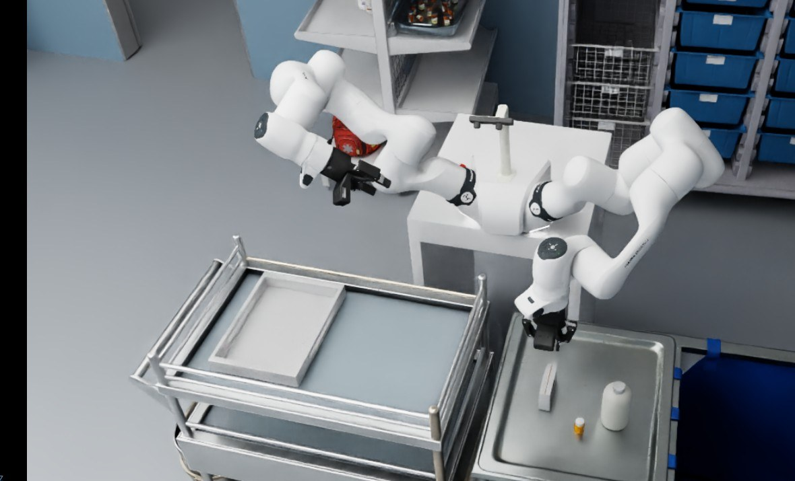
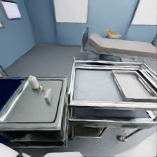
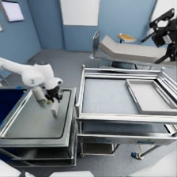
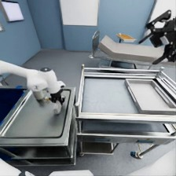
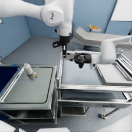
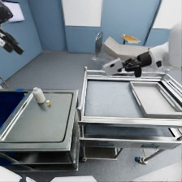
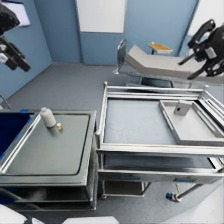

← Alle Projekte

Robotics & AI Hackathon – Teach the Robot
Siemens Healthineers | 10/2026 | Robotik- & Simulationsingenieur, 6er-Team
12× schnellere Demo-Erzeugung

Was?
- Dreitägiger Siemens Healthineers Robotics & AI Hackathon 2026 in Erlangen: Aufbau des Lernkreislaufs für einen Vision-Language-Action-(VLA)-Roboterassistenten im Herzkatheterlabor.
- Szenario: zweiarmige Übergabe einer Box mit einem Franka FR3 Duo in der Simulation.
Wie?
- Robotik- & Simulationsingenieur in einem 6er-Team.
- Skriptbasierten IK-Experten in NVIDIA Isaac Sim 6.0 entwickelt, der Demos mit verschobener Boxposition erzeugt (16/18 erfolgreich).
- Feintuning von π0.5 (LoRA) und ACT; Aufgabe in Genesis für parallele Datenerzeugung nachgebaut.
Ergebnisse
- Gezeigt, dass die Daten, nicht das Modell, der Engpass waren: die 94 bereitgestellten Demos enthalten nur eine Bewegung.
- 12× schnellere Demo-Erzeugung: von 6 min auf ca. 30 s pro Demo.
- Prototyp für VR-Teleoperation mit Meta Quest 3 für menschliche Demos.
Videos
Bilder


Die Aufgabe in der Simulation: zweiarmige Übergabe durch unsere Expert-Policy












Nächster Schritt: menschliche Demos in VR
- Prototyp für VR-Teleoperation mit Meta Quest 3: beide Arme werden über CloudXR in Isaac Sim gesteuert.
- Menschliche Demos liefern, was ein Skript nicht kann: beliebige Boxposen und echte Korrekturbewegungen.